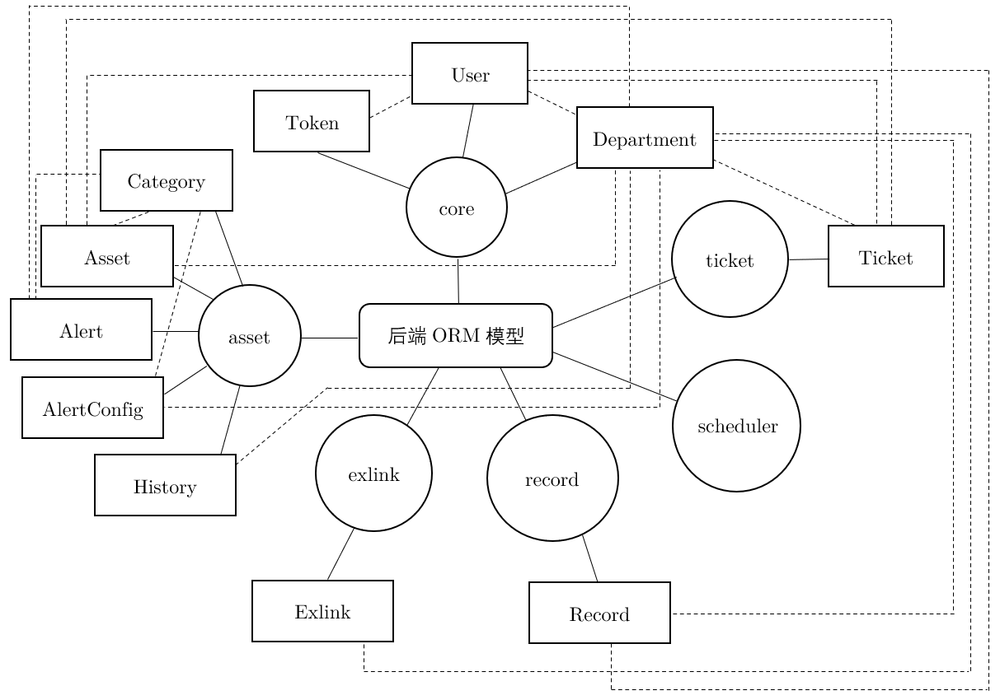

后端模型设计¶
后端使用了 Django 的 ORM 模型，以下「类型」均使用 Django 中的名称。
E-R 图¶

core¶
User¶
用户。
| 名称 | 类型 | 说明 | 默认值 | 备注 |
|---|---|---|---|---|
| username | Char | 用户名 | 唯一，最长长度 20 | |
| password | Char | 密码 | 最长长度 64，加密方式详见 API/user | |
| department | ForeignKey | 所属部门 | 指向 Department，superadmin 的此字段为空 | |
| is_superadmin | Boolean | 是否是超级管理员 | False | |
| is_useradmin | Boolean | 是否是系统管理员 | False | |
| is_assetadmin | Boolean | 是否是资产管理员 | False | |
| is_locked | Boolean | 是否锁定 | False | |
| feishu_openid | Char | 飞书 openid | 允许为空，最长长度 64 | |
| feishu_name | Char | 飞书用户名 | 允许为空，最长长度 64 |
Token¶
用户登录的 Token。请使用 Token.create() 函数创建。
| 名称 | 类型 | 说明 | 默认值 | 备注 |
|---|---|---|---|---|
| key | Char | uuid | 最长长度 64，没有使用 UUIDField 是历史遗留问题 | |
| user | ForeignKey | 所属用户 | 指向 User | |
| created | DateTime | 创建时间 | 创建时间 | |
| expires | DateTime | 失效时间 | 创建时间 24h 后 |
Department¶
部门。部门构成一棵树。初始存在特殊的部门 root 。「业务实体 (company)」是一种特殊的部门，定义为 root 的直接儿子（即深度为 1）。
| 名称 | 类型 | 说明 | 默认值 | 备注 |
|---|---|---|---|---|
| name | Char | 部门名 | 最长长度 128 | |
| uuid | UUID | uuid | uuid.uuid4 | 唯一，不可编辑，主键 |
| father | ForeignKey | 父部门 | 指向 Department，有且仅有 root 的此字段为空 | |
| is_root | Boolean | 是否是 root | False | 有且仅有 root 的此字段为 True |
| company | ForeignKey | 所属业务实体 | None | 指向 Department，root 的此字段为空，业务实体的此字段为自己 |
asset¶
Category¶
资产的分类。继承自树模型 MPTTModel （参见 MPTT 文档）。
| 名称 | 类型 | 说明 | 默认值 | 备注 |
|---|---|---|---|---|
| name | Char | 部门名 | 最长长度 128 | |
| parent | TreeForeignKey | 父类别 | ||
| uuid | UUID | uuid | uuid.uuid4 | 唯一，不可编辑，主键 |
| modified_by | ForeignKey | 最后一次修改此分类的用户 | None | |
| modified_at | DateTime | 最后一次修改的时间 | 保存时间 | |
| company | ForeignKey | 所属业务实体 | 指向 Department |
Asset¶
资产。继承自树模型 MPTTModel 。
| 名称 | 类型 | 说明 | 默认值 | 备注 |
|---|---|---|---|---|
| uuid | UUID | uuid | uuid.uuid4 | 唯一，不可编辑，主键 |
| name | Char | 部门名 | 最长长度 128 | |
| parent | TreeForeignKey | 父资产 | ||
| description | Char | 资产描述 | 最长长度 1024，允许为空 | |
| status | Char | 资产状态 | "IDLE" | 有如下选择："IDLE", "IN_USE", "IN_MAINTAIN", "RETIRED", "DELETED", "TO_MAINTAIN", "TO_RETURN" |
| user | ForeignKey | 挂账人或使用人 | None | 指向 User ，允许为空 |
| department | ForeignKey | 挂账部门 | 指向 Department | |
| count | Integer | 数量 | 1 | 当 is_distinct 为 True 时必须为 1 |
| is_distinct | Boolean | 是否是条目型资产 | ||
| total_value | BigInteger | 总价值 | 0 | 单位为 0.001 元 |
| lifespan | Integer | 总保质期 | 2147483647 | 单位为天 |
| current_value | BigInteger | 剩余价值 | 0 | 单位为 0.001 元，根据总价值、总保质期和剩余保质期线性插值求出 |
| rest_life | Integer | 剩余保质期 | 2147483647 | 单位为天 |
| last_update | DateTime | 上次更新剩余保质期的时间 | None | 允许为空（为了兼容旧版本），新加入的资产的此字段为创建时间 |
| category | ForeignKey | 分类 | 指向 Category |
AlertConfig¶
警告配置。每条配置指定了一个部门、一个分类、一个数值和一个警告类型，具体行为详见 API/alert
| 名称 | 类型 | 说明 | 默认值 | 备注 |
|---|---|---|---|---|
| uuid | UUID | uuid | uuid.uuid4 | 唯一，不可编辑，主键 |
| department | ForeignKey | 指定部门 | 指向 Department | |
| category | ForeignKey | 指定分类 | 指向 Category | |
| alert_type | Char | 警告类型 | 有如下选择："VALUE", "NUM", "TO_RETIRE" | |
| value | Integer | BigInteger | 0 | 指定数值 |
Alert¶
警告。根据 AlertConfig 所生成的警告。
| 名称 | 类型 | 说明 | 默认值 | 备注 |
|---|---|---|---|---|
| uuid | UUID | uuid | uuid.uuid4 | 唯一，不可编辑，主键 |
| department | ForeignKey | 指定部门 | 指向 Department | |
| category | ForeignKey | 指定分类 | 指向 Category | |
| alert_type | Char | 警告类型 | 有如下选择："VALUE", "NUM", "TO_RETIRE" | |
| value | Integer | BigInteger | 0 | 指定数值 |
History¶
记录每天每个部门的资产总价值，以备显示历史信息。
| 名称 | 类型 | 说明 | 默认值 | 备注 |
|---|---|---|---|---|
| date | Date | 日期 | ||
| total_value | BigInteger | 本部门资产总价值 | ||
| department | ForeignKey | 对应部门 |
exlink¶
Exlink¶
用户界面的外部链接。一个业务实体的所有用户共享此配置。
| 名称 | 类型 | 说明 | 默认值 | 备注 |
|---|---|---|---|---|
| title | Char | 标题 | 最长长度 20 | |
| uuid | UUID | uuid | uuid.uuid4 | 唯一，不可编辑，主键 |
| url | Text | url | ||
| company | ForeignKey | 业务实体 | 所有该业务实体的用户均可在用户界面访问此外部链接 |
record¶
Record¶
操作记录。使用文本的形式存储系统的操作记录。
| 名称 | 类型 | 说明 | 默认值 | 备注 |
|---|---|---|---|---|
| uuid | UUID | uuid | uuid.uuid4 | 唯一，不可编辑，主键 |
| time | DateTime | 创建时间 | 创建时间 | |
| caller | ForeignKey | 操作者 | None | 指向 User ，允许为空 |
| company | ForeignKey | 所属业务实体 | None | 指向 Company |
| event | Char | 事件类型描述 | 空串 | 最长长度 100 ，允许为空串 |
| brief_template | Text | 简介模板 | 空串 | 最长长度 1000 ，允许为空串。brief_json 将依此变为可读的形式 |
| brief_json | Text | 简介内容 | 空串 | 最长长度 1000，允许为空串，json 格式 |
| detail_json | Text | 详细内容（json格式） | 空串 | 最长长度 10000，允许为空串，json 格式 |
ticket¶
Ticket¶
工单。
| 名称 | 类型 | 说明 | 默认值 | 备注 |
|---|---|---|---|---|
| uuid | UUID | uuid | uuid.uuid4 | 唯一，不可编辑，主键 |
| status | Char | 工单状态 | "OPEN" | 有如下选择："OPEN", "ACCEPTED", "REJECTED", "INVALID", "CANCELED" |
| ticket_type | Char | 工单状态 | "OPEN" | 有如下选择："REQUEST", "RETURN", "MAINTAIN" |
| asset | ForeignKey | 关联的资产 | None | 指向 Asset，可以为空（但正常情况不应为空） |
| number | Integer | 资产数目 | 0 | 只有当类型为 REQUEST 且申请数量型资产时有效 |
| department | ForeignKey | 申请资产所属部门 | None | 指向 Department，可以为空（但正常情况不应为空） |
| request_time | DateTime | 创建时间 | 创建时间 | |
| request_msg | Text | 申请信息 | 空串 | 最长长度 1024，允许为空串或空 |
| approver | ForeignKey | 审批人 | None | 指向 User，允许为空 |
| approve_time | DateTime | 审批时间 | None | 允许为空 |
| approve_msg | Text | 审批信息 | None | 最长长度 1024，允许为空串或空 |
scheduler¶
使用 django-apscheduler 。创建了其所需的两张表，没有作其余修改。详见 apscheduler 文档。